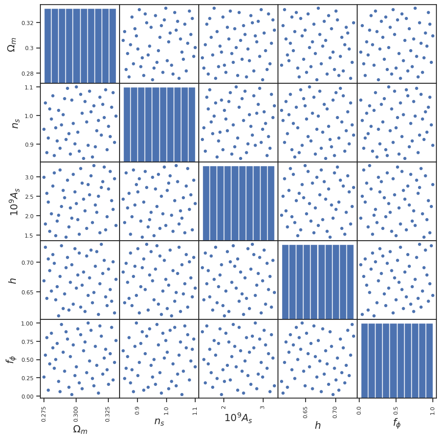

from CubicGalileonEmu.load import *
from CubicGalileonEmu.viz import *
from CubicGalileonEmu.pca import *
from CubicGalileonEmu.gp import *
from CubicGalileonEmu.emu import *
from CubicGalileonEmu.mcmc import *
import pandas as pd
import numpy as np
import matplotlib.pylab as plt
if_train_all = False ## Re-train all the models. Time-consuming.
if_mcmc_all = False ## Full MCMC run. Time-consuming.
if_savefig = FalseCubicGalileonEmu
GP emulator for boost factor in cubic Galileon gravity model
Modified Gravity emulator for boost in the dark matter power spectra
Install (for development, not production)
git clone https://github.com/nesar/CubicGalileonEmu.git
cd CubicGalileonEmu/
pip install -e '.[dev]'Basic rundown
A few imports
Loading files
Bk_all, Bk_all_smooth, k_all, z_all = load_boost_data()
Bk_lin_all, _, _ = load_boost_data_lin()
p_all = load_params()A few plotting routines
Experimental design
df_train_a = pd.DataFrame(p_all, columns=PARAM_NAME)
colors = ['b']*p_all.shape[0]
# colors = ['b']*num_sims + ['r']*num_sims_test
plot_scatter_matrix(df_train_a, colors);
Boost metrics colored by cosmology parameters
color_by_index = 4
z_index = 0
f, ax = plt.subplots(1, 2, figsize=(14, 4))
plot_lines_with_param_color(p_all[:, color_by_index],
k_all,
Bk_all[:, z_index, :],
'Training data, z=' + str(z_all[z_index]),
r'$k [h/Mpc]$',
r'$B(k)$',
PARAM_NAME[color_by_index], ax=ax[0]);
plot_lines_with_param_color(p_all[:, color_by_index],
k_all,
Bk_all[:, z_index, :]/Bk_lin_all[:, z_index, :],
'Training data, z=' + str(z_all[z_index]),
r'$k [h/Mpc]$',
r'$Q(k)$',
PARAM_NAME[color_by_index], ax=ax[1]);color_by_index = 3
z_index = 21
f, ax = plt.subplots(1, 2, figsize=(14, 4))
plot_lines_with_param_color(p_all[:, color_by_index],
k_all,
Bk_all[:, z_index, :],
'Training data, z=' + str(z_all[z_index]),
r'$k [h/Mpc]$',
r'$B(k)$',
PARAM_NAME[color_by_index],
ax=ax[0]);
plot_lines_with_param_color(p_all[:, color_by_index],
k_all,
Bk_all[:, z_index, :]/Bk_lin_all[:, z_index, :],
'Training data, z=' + str(z_all[z_index]),
r'$k [h/Mpc]$',
r'$Q(k)$',
PARAM_NAME[color_by_index],
ax=ax[1]);
z_index = 0
f, ax = plt.subplots(1, 2, figsize=(14, 4))
f = plot_lines_with_param_color(z_all,
k_all,
Bk_all[16, :, :],
'Training data',
r'$k [h/Mpc]$',
r'$B(k)$',
'redshift',
ax=ax[0]);
f = plot_lines_with_param_color(z_all,
k_all,
Bk_all[16, :, :]/Bk_lin_all[16, :, :],
'Training data',
r'$k [h/Mpc]$',
r'$Q(k)$',
'redshift',
ax=ax[1]);
Training involves: PCA, GP fitting.
## Data prep
z_index = 8
# y_vals = Bk_all[:, z_index, :]/Bk_lin_all[:, z_index, :] ## ## Unsmoothed Q(k)
y_vals = Bk_all_smooth[:, z_index, :] ## for B ### Using smooth values for emulation
# y_ind = np.arange(0, y_vals.shape[1])
y_ind = k_all
# Train-test split
test_indices = [0, 14, 35]
input_params= p_all[test_indices]
# target_vals = Bk_all[:, z_index, :][test_indices]/Bk_lin_all[:, z_index, :][test_indices] ## For Q
target_vals = Bk_all[:, z_index, :][test_indices]
# Load validation data
# Bk_all_val, _, _ = load_boost_data(LIBRARY_BK_FILE_VAL, LIBRARY_ZK_FILE_VAL)
# target_vals = Bk_all_val[:, z_index, :]/Bk_all_val[:, z_index, :]
# input_params = load_params(LIBRARY_PARAM_FILE_VAL)
train_indices = [i for i in np.arange(49)] # if i not in test_indices]
p_all_train = p_all[train_indices]
# y_vals_train = Bk_all[:, z_index, :][train_indices]/Bk_lin_all[:, z_index, :][train_indices] ## For Q
y_vals_train = Bk_all_smooth[:, z_index, :][train_indices]
print('Redshift: ' + str(z_all[z_index]))Redshift: 0.186sepia_data = sepia_data_format(p_all_train, y_vals_train, y_ind)
# sepia_data = sepia_data_by_redshift(redshift=0.01)
print(p_all_train.shape, y_vals_train.shape, y_ind.shape)
print(sepia_data)
model_filename = '../CubicGalileonEmu/model/multivariate_model_z_index' + str(z_index)
# sepia_model = do_pca(sepia_data, exp_variance=0.95)
sepia_model_pca = do_pca(sepia_data, exp_variance=0.999)(49, 5) (49, 768) (768,)
This SepiaData instance implies the following:
This is a simulator (eta)-only model, y dimension 768
m = 49 (number of simulated data)
p = 1 (number of inputs)
q = 5 (number of additional simulation inputs)
pu NOT SET (transformed response dimension); call method create_K_basis
sepia_model = do_gp_train(sepia_model_pca, model_filename)
plot_train_diagnostics(sepia_model)Starting tune_step_sizes...
Default step sizes:
betaU
[[0.1 0.1 0.1 0.1 0.1]
[0.1 0.1 0.1 0.1 0.1]
[0.1 0.1 0.1 0.1 0.1]
[0.1 0.1 0.1 0.1 0.1]
[0.1 0.1 0.1 0.1 0.1]
[0.1 0.1 0.1 0.1 0.1]]
lamUz
[[5. 5. 5. 5. 5.]]
lamWs
[[100. 100. 100. 100. 100.]]
lamWOs
[[100.]]Step size tuning: 100%|██████████| 50/50 [03:25<00:00, 4.11s/it]Done with tune_step_size.
Selected step sizes:
betaU
[[0.20039483 0.53346802 0.70860777 0.38193646 0.94307793]
[0.08953042 0.16706645 1.86357302 0.69816811 1.26519576]
[0.0348878 0.11363801 1.02663463 0.55011076 0.44193215]
[0.09193158 0.32122614 1.57886469 1.48499257 0.82433635]
[0.07446145 0.21646594 0.09608453 0.81944166 0.90499841]
[0.70237919 0.84388779 0.80397463 2.03052796 2.73231983]]
lamUz
[[0.86994527 1.06549902 1.00787244 1.28935769 1.47918973]]
lamWs
[[ 521.21459654 317.49045268 5266.06119313 5512.02207529 4164.28311237]]
lamWOs
[[157.42748451]]MCMC sampling: 100%|██████████| 1000/1000 [03:08<00:00, 5.29it/s]Model saved to ../CubicGalileonEmu/model/multivariate_model_z_index8.pkl
No thetas to plot
Load existing model
sepia_model = gp_load(sepia_model_pca, model_filename)WARNING: make sure this model was instantiated with the same input data as the model corresonding to this saved model info.Single-redshift emulation for new cosmological parameters
test_indices_rand = np.random.choice(input_params.shape[0], size=3, replace=False)
pred_mean, pred_std = emulate(sepia_model, sepia_data, input_params[test_indices_rand])
print(pred_mean.shape)
# pred_quant == Emulated (0.05, 0.95) quantile
f = validation_plot(k_all, target_vals[test_indices_rand], pred_mean, pred_std, xy_lims=[2e-2, 1e1, 0.98, 1.35]);
# f = validation_plot(k_all, target_vals[test_indices_rand], pred_mean, pred_std, xy_lims=[2e-2, 1e1, 0.9, 1.1]);(768, 3)
Sensitivity analysis from the emulator
f = sensitivity_plot(k_all, p_all, sepia_model, sepia_data, emulate, PARAM_NAME, xy_lims=[2e-2, 1e1, 0.98, 1.35]);
# f = sensitivity_plot(k_all, p_all, sepia_model, sepia_data, emulate, PARAM_NAME, xy_lims=[2e-2, 1e1, 0.9, 1.1]); ## Unsmoothed Q(k)
Multi-redshift emulation
Train all the models
if if_train_all:
do_gp_train_multiple(model_dir='../CubicGalileonEmu/model/',
p_train_all = p_all[train_indices],
# y_vals_all = Bk_all[train_indices]/Bk_lin_all[train_indices] ## Unsmoothed Q(k)
y_vals_all = Bk_all_smooth[train_indices],
y_ind_all = k_all,
z_index_range=range(49))Load all trained models
sepia_model_list, sepia_data_list = load_model_multiple(model_dir='../CubicGalileonEmu/model/',
p_train_all=p_all[train_indices],
# y_vals_all=Bk_all[train_indices]/Bk_lin_all[train_indices], ## Unsmoothed Q(k)
y_vals_all=Bk_all_smooth[train_indices],
y_ind_all=k_all,
z_index_range=range(49)
);Number of models loaded: 49 from: ../CubicGalileonEmu/model/#### Emulator uncertainty across parameter range
input_params0 = input_params[0]
z_inputs = 0.05
input_params_and_redshift = np.append(input_params0, z_inputs)
print(input_params_and_redshift[np.newaxis, :])
# sepia_data_select = sepia_data_by_redshift(redshift=z_inputs)
# sepia_data_select1 = sepia_data_by_redshift(redshift=z_all[2])
# sepia_data_select2 = sepia_data_by_redshift(redshift=z_all[3])
sepia_data_select = sepia_data_list[23]
sepia_data_select1 = sepia_data_list[22]
sepia_data_select2 = sepia_data_list[24]
emulated_with_redshift, emulated_with_redshift_err = emu_redshift(input_params_and_redshift[np.newaxis, :], sepia_model_list, sepia_data_list, z_all)
## There is an unknown issue with z_index=5 model, (sepia_model_list[6])
# emulate(sepia_model_list[6], sepia_data_select, input_params_and_redshift[:-1])[0]
plt.figure(433)
plt.plot(k_all, emulated_with_redshift[:, 0], label='interp at z=%.4f'%input_params_and_redshift[-1], lw=5, ls='--')
plt.plot(k_all, emulate(sepia_model_list[22], sepia_data_select1, input_params_and_redshift[:-1])[0], label='grid z=%.4f'%z_all[2])
plt.plot(k_all, emulate(sepia_model_list[24], sepia_data_select2, input_params_and_redshift[:-1])[0], label='grid z=%.4f'%z_all[3])
plt.legend()
plt.title('Comparison of redshift-space interpolation')
# plt.plot(k_all, emulate(sepia_model_list[0], input_params))
# plt.plot(k_all, emulate(sepia_model_list[0], input_params))
plt.show()[[0.31051392 1.085 2.541 0.67373333 0.480012 0.05 ]]
len(emulate(sepia_model_list[8], sepia_data, input_params_and_redshift[:-1]))
### Will give an error:
### ValueError: matmul: Input operand 1 has a mismatch in its core dimension 0, with gufunc signature (n?,k),(k,m?)->(n?,m?) (size 4 is different from 5)
### This happens when the sepia_model and sepia_data do not match2Emulator confidence across parameter range
# Parameter settings
steps = 50 # Number of steps in the grid for each parameter
param_name_extended = np.append(PARAM_NAME, 'Redshift')
red_min = 0
red_max = 3
red_mean = 1.0
param_min = np.append(p_all.min(axis=0), red_min)
param_max = np.append(p_all.max(axis=0), red_max)
param_mean = np.append(p_all.mean(axis=0), red_mean)
# Compute outputs and errors for a range of parameter values
def compute_errors(param_grid):
# print(param_grid.shape)
errors = np.zeros(shape=(param_grid.shape[0], ))
# errors = np.array([np.mean(emu_redshift(params[np.newaxis, :], sepia_model_list, z_all)[1][:, 0, :]**2) for params in param_grid])
for par_indx in range(errors.shape[0]):
emu_pred = np.array(emu_redshift(param_grid[par_indx][np.newaxis, :], sepia_model_list, sepia_data_list, z_all))
errors_emu = emu_pred[1, :, 0]
# print(errors_emu.shape)
errors[par_indx] = np.max(errors_emu)
# print(errors_emu)
return errors.reshape(steps, steps)
# Example usage:
param_indices = [4, 2] # Indices of parameters to vary
fixed_indices = [i for i in range(len(param_name_extended)) if i not in param_indices]
fixed_params = {param_name_extended[i]: param_mean[i] for i in fixed_indices}
param_grid = generate_param_grid_with_fixed(param_name_extended, param_indices, fixed_params, param_min, param_max, steps)
errors = compute_errors(param_grid)f = plot_error_heatmap( errors,
[param_name_extended[i] for i in param_indices],
[(param_min[param_indices[0]], param_max[param_indices[0]]), (param_min[param_indices[1]], param_max[param_indices[1]])]
)
if if_savefig:
f.savefig('../../../Plots/heatmap_params_4_5.png', bbox_inches='tight')
Parameter inference via MCMC using the emulator
ndim = 5
nwalkers = 100 # 500
nrun_burn = 100 # 300
nrun = 700 # 1000Creating mock observational data
target_indx = 0 #0 ,14, 35
z_index = 2
L = 32
fake_obs_data_index_every = 1
redshift = z_all[z_index]
k_cond = k_all < 1
x = k_all[::fake_obs_data_index_every][k_cond]
y = Bk_all[:, z_index, :][target_indx][::fake_obs_data_index_every][k_cond]
y = y + 1e-4*np.random.normal(0.0, 1.0, size=y.shape)
yerr = np.sqrt( Bk_all[:, z_index, :][target_indx][::fake_obs_data_index_every][k_cond]*(L**3))/(L**3)
x_grid = k_all
params_calib = p_all[target_indx][:, np.newaxis].T
print('redshift: ', redshift)redshift: 0.041f, a = plt.subplots(1,1, figsize = (8, 5))
input_params_and_redshift = np.append(params_calib, redshift)
bk_target, err_target = emu_redshift(input_params_and_redshift[np.newaxis, :], sepia_model_list, sepia_data_list, z_all)
a.plot(k_all, bk_target[:, 0], label='Emulated at target params', lw=5, ls='--')
a.errorbar(x, y, yerr, label='Target mock observations', ls='none', lw=1, color = "r")
a.scatter(x, y, s = 5, marker = "h", color = "r")
a.plot(k_all, Bk_all[:, z_index, :].T, 'k', alpha=0.1)
plt.plot(k_all, emulate(sepia_model_list[z_index], sepia_data_list[z_index], input_params_and_redshift[:-1])[0], label='grid z=%.4f'%z_all[z_index])
plt.plot(k_all, emulate(sepia_model_list[z_index+1], sepia_data_list[z_index + 1], input_params_and_redshift[:-1])[0], label='grid z=%.4f'%z_all[z_index + 1])
string_print0 = 'Target Params \n\n'
string_print1 = PARAM_NAME[0] + '= %.4f'%input_params_and_redshift[0] + '\n'
string_print2 = PARAM_NAME[1] + '= %.4f'%input_params_and_redshift[1] + '\n'
string_print3 = PARAM_NAME[2] + '= %.4f'%input_params_and_redshift[2] + '\n'
string_print4 = PARAM_NAME[3] + '= %.4f'%input_params_and_redshift[3] + '\n'
string_print5 = PARAM_NAME[4] + '= %.4f'%input_params_and_redshift[4] + '\n'
string_print6 = 'redshift' + '= %.4f'%input_params_and_redshift[5]
string_print = string_print0 + string_print1 + string_print2 + string_print3 + string_print4 + string_print5 + string_print6
props = dict(boxstyle='round', facecolor='gray', alpha=0.2)
plt.text(1.02, 0.1, string_print, transform=a.transAxes, fontsize=12, bbox=props)
a.set_xscale('log')
plt.title('pre-MCMC')
a.set_xlabel(r'$k [h/Mpc]$')
a.set_ylabel(r'$B(k)$')
plt.legend()
allMax = np.max(p_all, axis = 0)
allMin = np.min(p_all, axis = 0)
param1 = [PARAM_NAME[0], params_calib[0][0], allMin[0], allMax[0]]
param2 = [PARAM_NAME[1], params_calib[0][1], allMin[1], allMax[1]]
param3 = [PARAM_NAME[2], params_calib[0][2], allMin[2], allMax[2]]
param4 = [PARAM_NAME[3], params_calib[0][3], allMin[3], allMax[2]]
param5 = [PARAM_NAME[4], params_calib[0][4], allMin[4], allMax[4]]
params_list = [param1, param2, param3, param4, param5]pos0 = chain_init(params_list, ndim, nwalkers)
sampler = define_sampler(redshift, ndim, nwalkers, params_list, x_grid, sepia_model_list, sepia_data_list, z_all, x, y, yerr)MCMC run - first burn, then full.
pos, prob, state, samples, sampler, autocorr, index = do_mcmc(sampler, pos0, nrun_burn, ndim, if_burn=True)
if if_mcmc_all: # Full MCMC-run, will be slow
pos, prob, state, samples, sampler, autocorr, index = do_mcmc(sampler, pos, nrun, ndim, if_burn=False)
p_mcmc = mcmc_results(samples)
fig = plot_mcmc(samples, params_list, if_truth_know=True)
if if_savefig:
plt.savefig('../../../Plots/mcmc_plot.png', bbox_inches='tight')Burn-in phase
time (minutes): 6.990116775035858100%|██████████| 100/100 [07:20<00:00, 4.40s/it]mcmc results: 0.3117407443412698 1.0816159482641008 2.541760307153967 0.6857972480657628 0.47717583037390404
f, a = plt.subplots(1,1, figsize = (8, 5))
input_params_and_redshift = np.append(p_mcmc, redshift)
bk_mcmc, err_mcmc = emu_redshift(input_params_and_redshift[np.newaxis, :], sepia_model_list, sepia_data_list, z_all)
a.plot(k_all, bk_mcmc[:, 0], label='Emulated at best MCMC', lw=3, ls='--')
a.errorbar(x, y, yerr, label='Mock target', ls='none', lw=1, color = "r")
a.scatter(x, y, s = 5, marker = "h", color = "r", alpha=0.5)
a.plot(k_all, Bk_all[:, z_index, :].T, 'k', alpha=0.1)
# plt.plot(k_all, emulate(sepia_model_list[z_index], input_params_and_redshift[:-1])[0], label='Z1')
# plt.plot(k_all, emulate(sepia_model_list[z_index+1], input_params_and_redshift[:-1])[0], label='Z2')
string_print0 = 'Target Params \n\n'
string_print1 = PARAM_NAME[0] + '= %.3f'%params_calib[0][0] + '\n'
string_print2 = PARAM_NAME[1] + '= %.3f'%params_calib[0][1] + '\n'
string_print3 = PARAM_NAME[2] + '= %.3f'%params_calib[0][2] + '\n'
string_print4 = PARAM_NAME[3] + '= %.3f'%params_calib[0][3] + '\n'
string_print5 = PARAM_NAME[4] + '= %.3f'%params_calib[0][4] + '\n'
string_print6 = 'redshift' + '= %.3f'%redshift
string_print = string_print0 + string_print1 + string_print2 + string_print3 + string_print4 + string_print5 + string_print6
props = dict(boxstyle='round', facecolor='gray', alpha=0.2)
plt.text(1.02, 0.5, string_print, transform=a.transAxes, fontsize=12, bbox=props)
string_print0_mcmc = 'Optimized Params \n\n'
string_print1_mcmc = PARAM_NAME[0] + '= %.3f'%p_mcmc[0] + '\n'
string_print2_mcmc = PARAM_NAME[1] + '= %.3f'%p_mcmc[1] + '\n'
string_print3_mcmc = PARAM_NAME[2] + '= %.3f'%p_mcmc[2] + '\n'
string_print4_mcmc = PARAM_NAME[3] + '= %.3f'%p_mcmc[3] + '\n'
string_print5_mcmc = PARAM_NAME[4] + '= %.3f'%p_mcmc[4]
string_print_mcmc = string_print0_mcmc + string_print1_mcmc + string_print2_mcmc + string_print3_mcmc + string_print4_mcmc + string_print5_mcmc
props = dict(boxstyle='round', facecolor='blue', alpha=0.2)
plt.text(1.02, 0.05, string_print_mcmc, transform=a.transAxes, fontsize=12, bbox=props)
a.set_xscale('log')
plt.title('B(k) at MCMC constraints')
a.set_xlabel(r'$k [h/Mpc]$')
a.set_ylabel(r'$B(k)$')
plt.legend()
if if_savefig:
plt.savefig('../../../Plots/mcmc_results_Bk.png', bbox_inches='tight')
if if_mcmc_all:
tau = sampler.get_autocorr_time(tol=0)
print(tau)
plt.figure(43)
plt.plot(prob)
if if_savefig:
plt.savefig('../../../Plots/prob_plot.png', bbox_inches='tight')
selected_indices_for_plot = [0, 2, 4]
fig = plot_mcmc(samples[:, selected_indices_for_plot], [params_list[i] for i in selected_indices_for_plot], if_truth_know=True)
if if_savefig:
plt.savefig('../../../Plots/mcmc_plot_reduced_params.png', bbox_inches='tight')def plot_convergence(sampler, params_list, nrun, ndim, nwalkers):
n_params = len(params_list) # Number of parameters
fig, ax = plt.subplots(n_params, 1, figsize=(20, 2 * n_params), sharex=True)
ax[-1].set_xlabel('steps')
for i, param in enumerate(params_list):
ax[i].plot(np.arange(nrun), sampler.chain[:, :, i].T, lw=0.2, alpha=0.9)
ax[i].text(0.9, 0.9, param[0], horizontalalignment='center', verticalalignment='center', transform=ax[i].transAxes, fontsize=12)
# fig.savefig('plots/convergence_mcmc_ndim{}_nwalk{}_run{}_{}-{}.png'.format(ndim, nwalkers, nrun, summary_stat, design), dpi=100)
return fig
if False:
# Example usage
plot_convergence(sampler, params_list, nrun, ndim, nwalkers)if if_mcmc_all:
n = 100 * np.arange(1, index + 1)
y = autocorr[:index]
plt.plot(n, n / 100.0, "--k")
plt.plot(n, y)
plt.xlim(0, n.max())
plt.ylim(0, y.max() + 0.1 * (y.max() - y.min()))
plt.xlabel("number of steps")
plt.ylabel(r"mean $\hat{\tau}$");
plt.show()if if_mcmc_all:
plt.plot(autocorr)
plt.xscale('log')
# plt.yscale('log')### TO-DO
## Redshift sampling is better in the new Validation design -- validate AFTER redshift interpolation
## New heatmap with max errors
## Use smoothing for spectra
## Use Carola's new data
## MCMC with all the accumulated errors
## Add cosmicEmu's P(k) for MCMC
## Carola will try P(k) + cosmic Shear?
## Fisher ellipses?